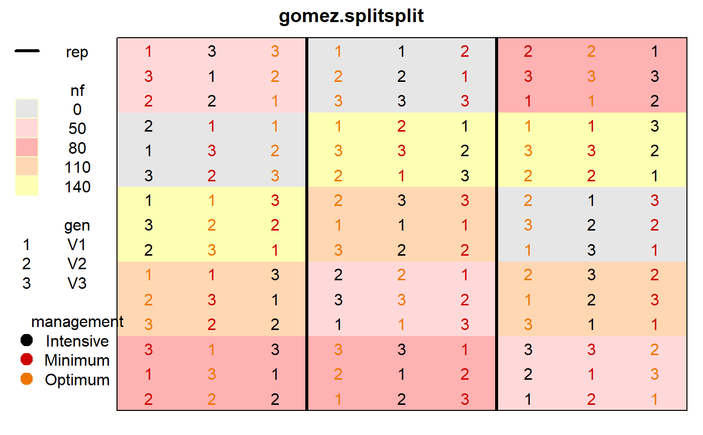
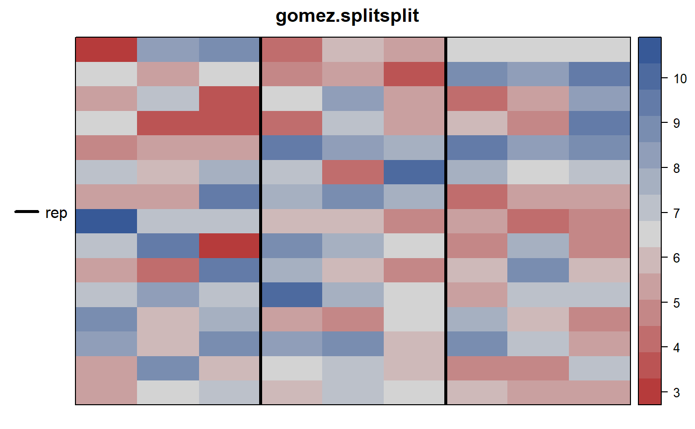
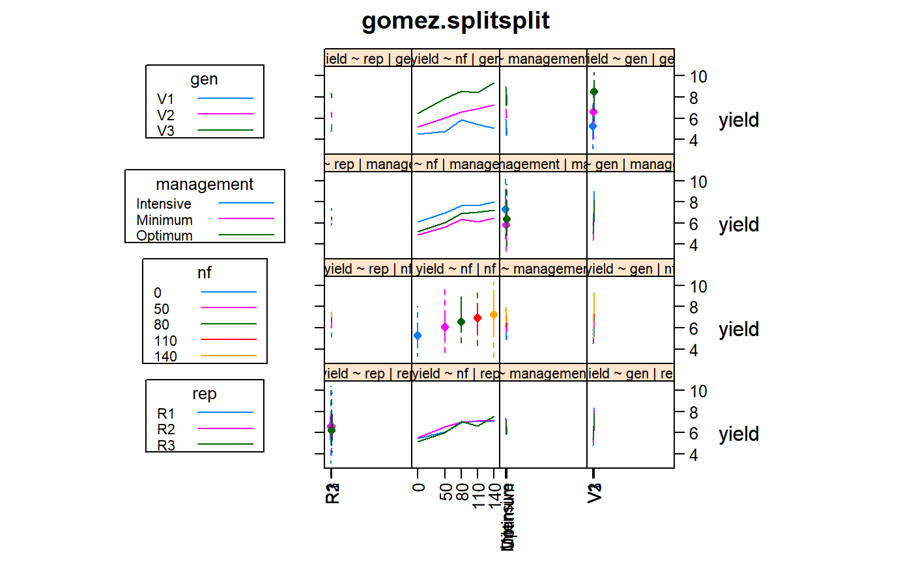

gomez.splitsplit.RdGrain yield of three varieties of rice grown in a split-split plot arrangement with 3 reps, nitrogen level as the main plot, management practice as the sub-plot, and rice variety as the sub-sub plot.
A data frame with 135 observations on the following 7 variables.
repblock, 3 levels
nitronitrogen fertilizer, in kilograms/hectare
managementplot management
gengenotype/variety of rice
yieldyield
colcolumn position in the field
rowrow position in the field
Used with permission of Kwanchai Gomez.
Gomez, K.A. and Gomez, A.A.. 1984, Statistical Procedures for Agricultural Research. Wiley-Interscience. Page 143.
H. P. Piepho, R. N. Edmondson. (2018). A tutorial on the statistical analysis of factorial experiments with qualitative and quantitative treatment factor levels. Jour Agronomy and Crop Science, 8, 1-27. https://doi.org/10.1111/jac.12267
# \dontrun{ library(agridat) data(gomez.splitsplit) dat <- gomez.splitsplit dat$nf <- factor(dat$nitro) libs(desplot) desplot(dat, nf ~ col*row, # aspect unknown out1=rep, col=management, num=gen, cex=1, main="gomez.splitsplit")desplot(dat, yield ~ col*row, # aspect unknown out1=rep, main="gomez.splitsplit")libs(HH) position(dat$nf) <- c(0,50,80,110,140) interaction2wt(yield~rep+nf+management+gen, data=dat, main="gomez.splitsplit", x.between=0, y.between=0, relation=list(x="free", y="same"), rot=c(90,0), xlab="", par.strip.text.input=list(cex=.7))# AOV. Gomez page 144-153 m0 <- aov(yield~ nf * management * gen + Error(rep/nf/management), data=dat) summary(m0) # Similar to Gomez, p. 153.#> #> Error: rep #> Df Sum Sq Mean Sq F value Pr(>F) #> Residuals 2 0.732 0.366 #> #> Error: rep:nf #> Df Sum Sq Mean Sq F value Pr(>F) #> nf 4 61.64 15.410 27.7 9.73e-05 *** #> Residuals 8 4.45 0.556 #> --- #> Signif. codes: 0 '***' 0.001 '**' 0.01 '*' 0.05 '.' 0.1 ' ' 1 #> #> Error: rep:nf:management #> Df Sum Sq Mean Sq F value Pr(>F) #> management 2 42.94 21.468 81.996 2.3e-10 *** #> nf:management 8 1.10 0.138 0.527 0.823 #> Residuals 20 5.24 0.262 #> --- #> Signif. codes: 0 '***' 0.001 '**' 0.01 '*' 0.05 '.' 0.1 ' ' 1 #> #> Error: Within #> Df Sum Sq Mean Sq F value Pr(>F) #> gen 2 206.01 103.01 207.867 < 2e-16 *** #> nf:gen 8 14.14 1.77 3.568 0.00192 ** #> management:gen 4 3.85 0.96 1.943 0.11490 #> nf:management:gen 16 3.70 0.23 0.467 0.95376 #> Residuals 60 29.73 0.50 #> --- #> Signif. codes: 0 '***' 0.001 '**' 0.01 '*' 0.05 '.' 0.1 ' ' 1# }